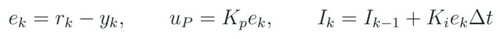
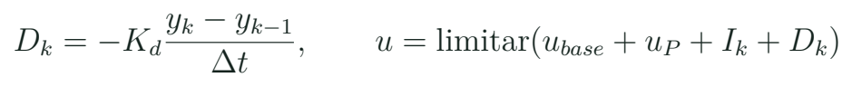
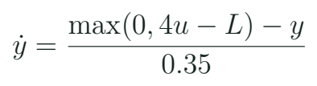
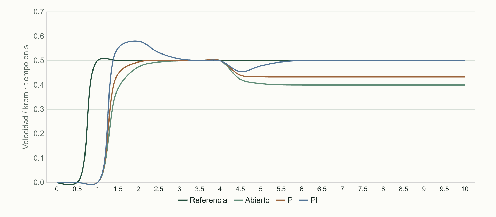

Control realimentado: P, PI y una introducción a PID
Comparar respuestas ante una perturbación y explicar el papel de P, I y D con tiempo de muestreo y saturación.
La pregunta que abre el lazo cerrado
En lazo abierto se fija un mando y se observa qué ocurre. En lazo cerrado se mide una salida, se compara con una referencia y se actualiza el mando usando esa diferencia. No se vuelve perfecto por añadir la palabra PID. El controlador trabaja con un sensor, un actuador, retardos y límites. Si la referencia es imposible para el conjunto, el algoritmo no puede crear capacidad física que el actuador no tiene.
Elementos del banco
| Elemento | Ejemplo | Qué representa |
|---|---|---|
| Referencia r | 500 RPM | Objetivo declarado |
| Medida y | RPM del encoder | Salida observada |
| Error e | r menos y | Diferencia de seguimiento |
| Mando u | Código PWM | Acción sobre el banco |
La práctica nueva usa primero una planta matemática de aula y luego el banco físico disponible. El modelo es de primer orden y declara su ganancia y su constante de tiempo. Sus respuestas no se presentan como medidas del kit MECRO. La ventaja didáctica consiste en poder introducir una perturbación conocida y repetir exactamente las condiciones.
Qué añade cada acción


Acciones y observaciones
| Acción | Qué relaciona | Qué hay que vigilar |
|---|---|---|
| P | Error actual y mando | Error persistente y ganancia |
| I | Acumulación temporal | Acumulación en saturación |
| D | Cambio de la medida | Ruido y diferencia temporal |
En un banco de velocidad puede bastar PI para el objetivo introductorio. PID nombra una familia, no la obligación de usar tres términos distintos de cero. La derivada se estudia con un caso de ruido para comprender su coste. El ajuste se hace sobre una configuración identificada y se conserva una curva por cambio.
Un modelo transparente para comparar

La referencia del ejercicio pasa de cero a 500 RPM. Después se aplica una perturbación equivalente de 100 RPM. El mando base es r/4. La comparación incluye lazo abierto, P con ese mando base y PI. Como las entradas del modelo se conservan, una diferencia entre respuestas puede relacionarse con el controlador elegido. Las curvas y el CSV del curso se generan a partir de estas ecuaciones con paso declarado.
Una cuenta de controlador
Si el error es 50 RPM, Kp vale 0,12 cuentas/RPM, Ki vale 0,6 cuentas/(RPM·s) y Δt = 0,02 s, ¿qué contribuciones obtienes?
Ver razonamiento del caso
P aporta 6 cuentas. El incremento de I es 0,6 × 50 × 0,02 = 0,6 cuentas en ese paso. El acumulado I depende de los pasos anteriores.
Sin integral, el modelo con mando base y P necesita un error persistente para compensar la perturbación. En régimen del caso, e = 100/(1 + 4 × 0,12), aproximadamente 67,6 RPM. La integral puede aportar la acción mantenida que reduce ese error si el sistema tiene capacidad y el ajuste resulta adecuado. La conclusión pertenece a este modelo y a esas condiciones.
Saturación y acumulación integral
Acumulación condicionada del ejemplo
float trial = integral + Ki * error * dt;
float unsat = base + Kp * error + trial;
bool inside = unsat >= 0 && unsat <= 255;
bool returning = (unsat > 255 && error < 0)
|| (unsat < 0 && error > 0);
if (inside || returning) integral = trial;
float u = constrain(base + Kp*error + integral,
0.0f, 255.0f);El mando tiene un intervalo. Si se sigue acumulando integral mientras el actuador ya está en un extremo y el error exige avanzar todavía más, puede demorarse la recuperación al cambiar la situación. El fragmento conserva el incremento cuando la salida está dentro o cuando ayuda a regresar del límite. Es una estrategia introductoria que debe estudiarse con su definición exacta; no se llama anti-windup a cualquier recorte sin explicar qué ocurre con el estado integral.
El firmware c11_pi_virtual ejecuta una planta de paso fijo y produce CSV. Ese tiempo pertenece al modelo. El banco real mide intervalos y respuesta del conjunto. Al pasar de uno a otro no se copian ganancias como garantía de funcionamiento. Se vuelve a identificar escala, límites, dirección de acción y condiciones de la medida.

Laboratorio de comparación con una perturbación
- Dibuja referencia, controlador, planta, medida y perturbación.
- Abre el CSV sintético y localiza el escalón de referencia y el cambio de carga.
- Compara lazo abierto y P conservando el mando base y las mismas condiciones.
- Compara P y PI; describe error persistente y evolución temporal.
- Introduce un caso de saturación y observa el estado integral.
- Estudia D con una medida que contiene una variación rápida; explica por qué puede amplificarla.
- En el banco docente disponible, repite primero una prueba pequeña con referencia alcanzable.
Qué comparar en una respuesta
| Pregunta | Dato que la apoya |
|---|---|
| ¿Sigue la referencia? | Error y evolución |
| ¿Compensa la perturbación? | Estado antes y después |
| ¿Satura? | Mando y límites |
| ¿El cambio es repetible? | Condiciones conservadas |
Las curvas se leen con ejes y unidades. Un cruce de la referencia puede ser sobrepaso; una respuesta rápida no es necesariamente la mejor si produce oscilación o exige mando saturado. El alumno escribe una conclusión que incluya una ventaja y una condición observada del caso, sin convertir una única cifra en un ranking universal.
Relación con drones y siguiente paso
En un UAV puede haber varios lazos y estimaciones entre el mando humano, la orientación y la actuación. El curso no los condensa en una receta de tres ganancias. Enseña las piezas conceptuales que permiten hacer mejores preguntas: qué variable se controla, qué sensor la informa, a qué frecuencia se actualiza y qué límites tiene la acción. El proyecto 17 se revisará como demostración de mando y control proporcional de banco, con su alcance corregido.
Un número llamado pid
Un programa calcula error × kp y guarda el resultado en pid_roll. ¿Qué acción implementa?
Ver razonamiento del caso
Una acción proporcional. El nombre de la variable no añade integral ni derivada.
Para ampliar, consulta Feedback Systems de Åström y Murray en sus secciones de realimentación y PID. Lee el esquema de bloques junto a un caso del banco. La meta de esta primera aproximación es explicar por qué se produjo una respuesta y qué dato permitiría revisar una hipótesis. Las ganancias y las curvas forman parte de esa explicación, no un sustituto de ella.
Práctica guiada
- Mostrar que el mismo PWM puede producir otra velocidad al cambiar la carga.
- Resolver una contribución P y un incremento I con unidades.
- Comparar el modelo de referencia en CSV con idénticas entradas.
- Explicar límites y transferencia al banco físico.
Preguntas de cierre
¿error × kp es PID completo?
Es proporcional, aunque la variable se llame pid.
¿Qué ocurre si se omite Δt en I?
La acumulación cambia al cambiar la frecuencia de ejecución.
¿Una referencia imposible se resuelve subiendo ganancias?
No. Se revisan capacidad, saturación, medida y objetivo.
Entrega
Gráficas identificadas, caso P/I resuelto y comparación de dos respuestas.
Proyectos MECRO relacionados
- 15. Control de Motor Industrial · Banco nuevo. Motor, encoder, control; web sin simulador ni imagen
- 17. Mando de Vuelo (Flight Controller) · Núcleo corregido. Mando y demostración P de banco Abrir referencia Wokwi
Fuentes para ampliar
[MECRO] MECRO. Laboratorio Electrónica con ESP32: veinte proyectos.
[FBS] Åström y Murray. Feedback Systems: An Introduction for Scientists and Engineers; edición electrónica de los autores.
[PWM] Espressif Systems. Arduino-ESP32: LEDC.
[UART] Espressif Systems. Arduino-ESP32: Serial/UART.